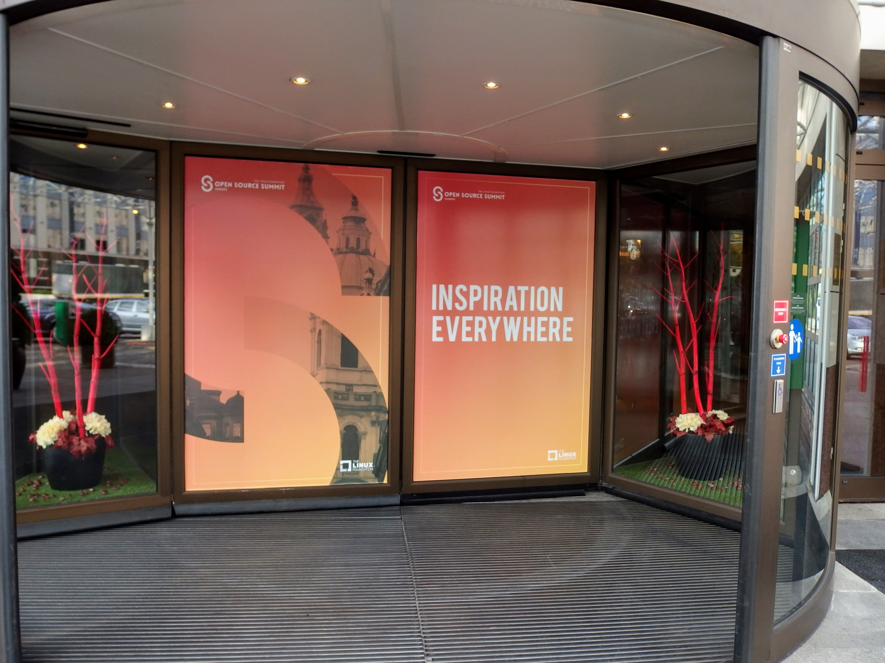

This post is my recap of the Open Source Summit Europe conference which took place in Praque (Czech Republic) from October 23-26, 2017. I’ll go briefly through the sessions I attended and the notes I took.
| Date | Change description |
|---|---|
| 2017-11-10 | The first release |
The Open Source Summit Europe describes itself as:
LinuxCon, ContainerCon, CloudOpen and the new Open Community Conference combine under one umbrella name in 2017 - the Open Source Summit. At the Open Source Summit, you will collaborate, share information and learn across a wide variety of topics, with 2,000 technologists and community members.
It is one of the many events of the Linux Foundation [1] and the main page for the conference itself can be found at [2]. The full schedule for the event I attended is at [3] and the videos to the keynotes can be found at [4].
At any given time I had two to four conflicting sessions in my bookmarks, so I had to decide which ones to go to. Here’s the chronological list of sessions I attended. The linked sessions often have the used presentations, in case you like to have more details.
Robert Kratky (Red Hat): http://sched.co/ByIP
The usual measure of success for writing documentation is comprehensiveness. Everything needs to be documented. With shorter delivery cycles of the software to document, it got harder to achieve that level of comprehensiveness. It is also hard to read a monolithic document of dozens to hundreds of pages.
So they started to use a modular approach, based on the question, how to achieve a specific goal. He made a comparison to StackOverflow, which basically does exactly that. It’s not comprehensive, but focuses on specific content and user stories to document. They created a documentation assembly based on action oriented, modular templates, which allowed them to deliver the most important documentation in each delivery cycle.
Gabriel Krisman (Collabora): http://sched.co/BxIA
Gabriel mentioned Amdahl’s law [5] and that you should not do
premature optimization without knowing what parts of your code base
is hot code. He recommends knowing the perf profiling tool and
metrics like cache-misses and branch-misses. It’s probably also
a good idea to stick to common algorithms and avoid being fancy, as the
compiler most likely optimizes better than you. At [6], they show
more tips and tricks.
Dawn Foster (The Scale Factory): http://sched.co/BxIH
This was a presentation of Dawn’s research for her PhD. Key findings where, that task affiliation is far greater than company affiliation. Also, that the timezone pain gets mitigated by the asynchronous nature of mailing lists. Lastly, professional relationships get stronger with face to face meetings like conferences.
She chose a very interesting type of data visualization for (strength of) collaboration. I don’t know the name of that diagram type; it’s basically a dependency graph arranged in a cycle. Check out her slides at the link above.
Jose Manrique Lopez de la Fuente (Bitergia): http://sched.co/ByIM
I wasn’t aware of the term inner source [7] , until Jose mentioned it in his talk. To move in that direction he discussed the use of goal, question, metric (GQM) [8] and the DevOps framework CALMS:
He mentioned that the Community Health Analytics Open Source Software (CHAOSS) can help you to navigate through the complex and very important non-code part of software development.
Tomas Tomecek (Red Hat): http://sched.co/BxIW
Tomas showed examples of non-trivial hard-to-read Dockerfiles and the problems he faces with parsing and linting them due to the missing spec of the file format. He worried about the varying degrees of quality, freshness and maintenance of the images at DockerHub.
His idea was to use ansible-container to make things more readable, flexible and reusable, until the Moby buildkit could lift some (or all) of the mentioned limitations of Dockerfiles.
Wei Xiong (Huawei): http://sched.co/Cflp
Huawei promotes a cloud-pipe-device ecosystem [9]. All the different parts which play a role until a service can be consumed, run on Linux. But the OS package dependencies get harder to maintain, especially across those very different parts:
Instead of having one generic multi purpose Linux instance, they create multiple single purpose Linux instances, based on a common ancestor EulerOS [10]. It’s the divide and conquer strategy for problems, which means they build assembly lines with smaller parts with the goal to have better control.
It was also interesting to hear that they target to have ~90% of the workload happening in containers within the next 2 years. Securing containers happens with KVM.
Michelle Noorali & Matt Butcher (Microsoft): http://sched.co/CexK
Todo
TODO
Kris Buytaert (Inuits.eu): http://sched.co/BxIo
Todo
TODO
Michael Bright (HPE): http://sched.co/BxIz
Todo
TODO
Ilan Rabinovitch (Datadog): http://sched.co/ByIc
Todo
TODO
Bruno Cornec (HPE) and Michael Jaeger (Siemens): http://sched.co/BxJC
Todo
TODO
Jens Voelker & John Smith (IBM): http://sched.co/Cgor
Todo
TODO
Joerg Schad & Johannes Unterstein (Mesosphere): http://sched.co/BxIl
The gist of this talk was, be very aware of what you pack into a container
and what actually happens inside the container and on the host. An example
was given with a Java application. Apparently, before Java8, the
JRE is not aware of cgroups and uses host resources. And the hard limit on
memory controlled by cgroups means, that the docker process gets killed
when it reaches a state of over-consumption. With Java8 and later, you
can use the flags UseCGroupMemoryLimitForHeap and
UnlockExperimentalVMOptions. With this, all the namespace and cgroup
mapping on the real resources get considered.
Kris Buytaert (Inuits.eu): http://sched.co/BxJd
It was an opinionated talk (which is good, that’s why I go to conferences) and Kris is obviously very passionate about DevOps. His main points were, that Enterprises are afraid of (public) clouds and are in favor of “caged” private clouds, where you emulate non-caged private clouds with huge VMs (previously requested with an internal ticketing system) and run Docker in it.
The actual problem, that developers and operators don’t talk to each other didn’t get tackled, as a Docker container is treated now like a fancy tarball, which gets thrown over the wall with “works on my machine, I’m done”. To be precise, he didn’t complain about Docker as a technology, he was more worried about how we use this technology.
Eduardo Navarro & Björn Geuken (SUSE Linux GmbH): http://sched.co/ByRq
The open build service (OBS) [11] can build OS packages for different package managers and CPU architectures and distributions. It is based on kiwi [13], an OS image builder. A github webhook integration is available, so it should be possible to create a continuous integration with continuous delivery approach with it. A private installation of OBS is also possible.
To be honest, I didn’t fully attend this workshop, as it conflicted with another session I wanted to see, so I missed probably some information. It sounded very promising though.
Erit Wasserman (Red Hat): http://sched.co/CnWI
The fun fact first, Erit let us know that Ceph got its name from Cephalopods [12] (squids, octopuses and suchlike). The high-level differences between the common ways to store data are:
At least that’s what I noted down, I was never a storage guy. As the objects are immutable, each version of an object is a new object, which means you need a retention policy to deal with the needed disk space.
Apparently, Ceph offers block, file and object storage and uses rados as the underlying distributed object storage, while radosgw lifts some limits of rados (I didn’t get the details which limits). As the single objects can be big, you need a way to be resilient against network issues, so it divides single large objects into smaller ones and does a multipart upload.
Isabel Drost-Fromm (Europace AG): http://sched.co/ByIo
Isabel talked about everything development related but the code, which is great, as “the messy problems are people problems” and I have to agree. The source code is only a small part of the project and the community is at least as important as the code. She made excellent points about the different ways of communication, trademarking, licensing, change management, FAQs, work delegation and much more. Finding ways for newbies to replicate correct behavior is important too. A lot to think about when you start your next open source project.
Thorsten Kukuk (SUSE): http://sched.co/BxK2
Thorsten did a proof of concept with btrfs, a copy on write general purpose filesystem to enable transactional operating system updates without reboots. He uses the btrfs subvolumes (not to be confused with LVM volumes) and their snapshot capability to achieve this. Unfortunately I didn’t get all the details, but having to never reboot again after an update sounds like operators would love it.
Michael Steinfurth (B1 Systems GmbH): http://sched.co/ByRs
This session showed how kubernetes uses etcd for saving data. You can run etcd on kubernetes itself or as dedicated servers and you need at least 3 etcd nodes to have a quorum. The etcd clients have to advertise themselves to the peers. Michael used flanneld for networking overlay and stored the network configuration in etcd and the whole etcd cluster is then aware of this new value. For all that, you can use kubectl, a configuration tool and cluster CLI.
It was a very good event; the quality of the sessions ans speakers was excellent. Everything was well organized. The evening event on Wednesday took place in the Municipal House, a gorgeous building (see image below). I’m looking forward to the next event, October 22 - 24, 2018 in Edinburgh, Scotland.
| [1] | http://events.linuxfoundation.org/ |
| [2] | http://events.linuxfoundation.org/events/open-source-summit-europe |
| [3] | https://osseu17.sched.com/ |
| [4] | https://www.youtube.com/playlist?list=PLbzoR-pLrL6pISWAq-1cXP4_UZAyRtesk |
| [5] | https://en.wikipedia.org/wiki/Amdahl%27s_law |
| [6] | https://www.collabora.com/news-and-blog.html?blogs |
| [7] | https://en.wikipedia.org/wiki/Inner_source |
| [8] | https://en.wikipedia.org/wiki/GQM |
| [9] | http://www1.huawei.com/en/static/HW-104296.pdf |
| [10] | http://developer.huawei.com/ict/en/site-euleros/euleros-introduction |
| [11] | http://openbuildservice.org/ |
| [12] | https://en.wikipedia.org/wiki/Cephalopod |
| [13] | https://github.com/openSUSE/kiwi |
{kind=link}
{kind=link}